i
No baseline
Straight into a deficit with no reference point, so nothing you change afterwards can be read properly. You're steering blind from day one.
Premium 1:1 coaching
Results you can see in eight weeks. Twelve months of one-to-one coaching to make them permanent. Not another six-week cut you give back by spring.
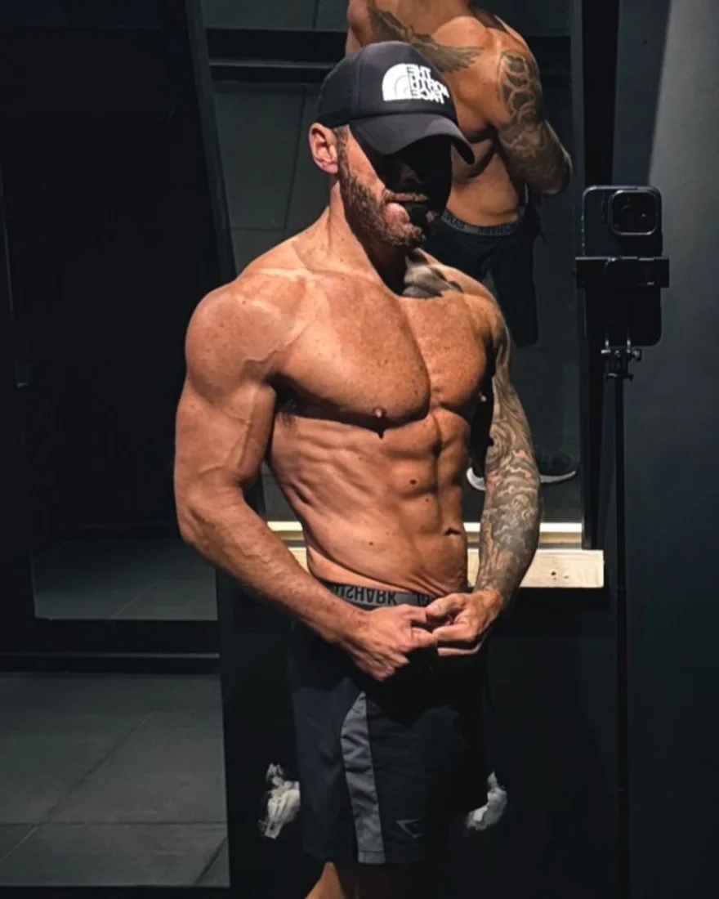
Why most transformations fail
Three things break a transformation, and none of them is wanting it enough. You did want it. You were just never given a way to read what was happening.
Straight into a deficit with no reference point, so nothing you change afterwards can be read properly. You're steering blind from day one.
Reacting to every morning's number, water, salt, sleep, instead of the weekly trend that actually tells the truth.
Cutting carbs, doubling cardio, new plan, fasting, all in the same week. When it stalls, you've no idea which one moved.
Who's coaching you
Close to a litre of vodka most nights. Twenty to thirty cigarettes a day. Blood pressure 151/105. I didn't need more motivation. I needed a structure.
Today it's 113/69, with no medication. That structure is exactly what I coach.
Sound familiar?
On all 1:1 coaching
Hold 80%+ on your weekly structure score for eight weeks. Do your part and see no results, and month three is free.
The score measures whether you did the work, not whether the scale moved. If you hit 80% and the results are flat, that's not on you. It means the plan needs adjusting, and that's my job. I'll guide you through it every week. I'm in your corner when you need it.
Illustration only. Every week above the line, no results, month three is on me.
How the score works
One weekly score, 0 to 100%, averaged across the four pillars. It scores what you control, not the outcome.
You did your job. The plan needs adjusting, and that's on me. The guarantee protects you.
One pillar slipped. We find which one and why, and fix that before touching anything else.
The turn
Motivation gets you to week two. It always has. It's why this is the fourth restart this year.
Structure gets you to the photos you don't recognise. A system that reads what's happening and tells you the one thing to change next.
Not another plan. A way of knowing why it's working. That's the part that changes for you.
The method
No hacks, no 30-day miracles. The same loop behind every result on this page, run on you every single week.
Find your true maintenance and set macros to your goal. A real baseline before a single thing changes.
Hit your full macros, protein, carbs and fats, not just one number. Log honestly, train your split, move your steps. The app carries the plan. You bring the reps.
Weekly averages, photos, measurements, read together. Change one thing. Repeat until unrecognisable.
Where it runs
Everything lands in one app. Every set you log, every meal, every step, every night's sleep and your resting heart rate. I read it all together each week, and that's how I steer the plan. I see how you're tracking before we even speak.
Inside the client app. Example week, shown for illustration.
+311 kcal over target across Friday to Sunday. Small on its own. Over a year, it's the difference.
Bench press · top set of 8, logged in the app
Daily, against the 10,000 line. Faded days fell short.
Nightly, against the 7 hour line. The weekend dipped.
Recovery over 8 weeks. Lower means you're coping with the work.
Best week yet in the gym, weekday food spot on, and your resting heart rate shows your body's coping. The weekend is where the inches are, so we plan for it instead of fighting it.
Video feedback
Film your working sets, upload them in the app, and within 48 hours I send them back with timestamped notes on your form. Set-up, tempo, range, and exactly what to change next session. You never train alone, even when you do.
Example notes, shown for illustration.
The myth
Most men think getting in shape means living in the gym and grinding out cardio. It doesn't. Here's what the research actually says.
Three focused sessions a week is enough.
Training each muscle twice a week grew more muscle than once a week.
Schoenfeld et al., Sports Med 2016A minimum of four hard sets per muscle a week builds strength and size, using big multi-joint lifts.
Iversen et al., Sports Med 2021Cardio on its own barely moves the scale.
Six to twelve months of cardio alone, across 14 trials. A modest drop at best.
Thorogood et al., Am J Med 2011How much less exercise-only programmes lost at a year than ones combining food and activity.
Johns et al., J Acad Nutr Diet 2014Calories burned rise with activity at first, then level off as the body adapts.
Pontzer et al., Curr Biol 2016The answer
Food sets the result. Three lifting sessions keep the muscle while the fat comes off. Steps keep you moving without wrecking your recovery. Resistance training helps preserve muscle during weight loss and builds strength while you do it.
Cava et al., Adv Nutr 2017Evidence, not opinion
Every part of the method is there for a reason. Here's the published research behind each one, so you don't have to take my word for it.
Hover to pause · swipe to browsePeople in a clinical study under-reported what they ate by 47% and over-reported their activity by 51%. Guessing your intake is how plans fail. Measuring is how they start.
People who lost 10% or more logged their food 2.7 times a day, against 1.7 for those who lost less. Across 22 studies, self-monitoring was consistently linked to weight loss.
The evidence-based approach to a cut sets protein high, fat at 15–30% of calories and carbs with the rest, losing 0.5–1% of bodyweight a week to keep muscle. Full macros, not just protein.
On the same diet, sleeping 5.5 hours instead of 8.5 cut the share of weight lost as fat by 55% and raised muscle loss by 60%. Adding about 1.2 hours of sleep cut intake by 270 kcal a day.
Five years after structured weight-loss programmes, people had kept only 17–29% of what they lost on average. A short diet is easy to give back. That is why the work is twelve months.
Links open the original papers. Studies describe groups of people, not a promise for any one person.
Proof, not promises
Same man. The physique came the way the blood pressure did, with structure, over years. I ask every client to track honestly and show the truth.
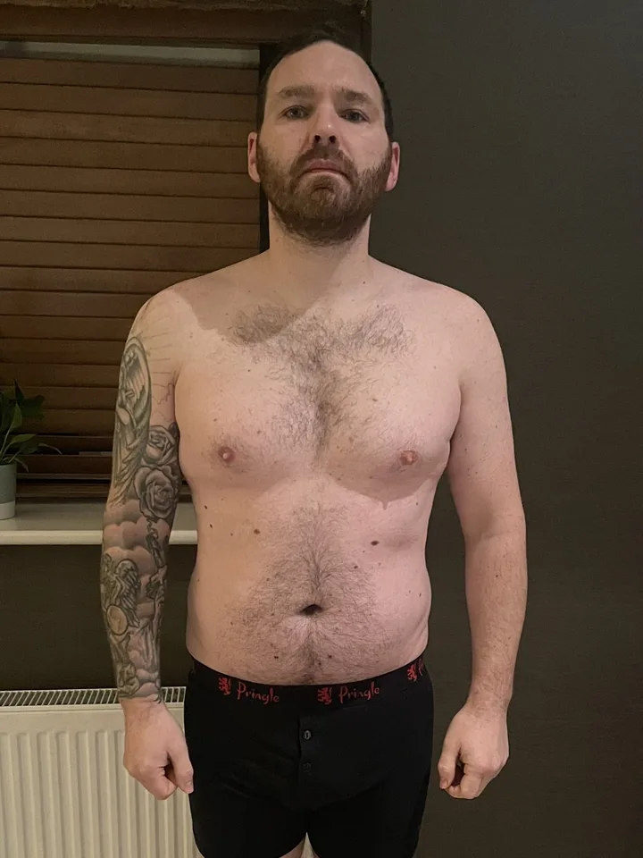
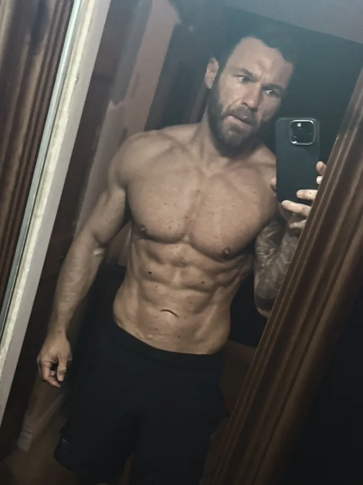
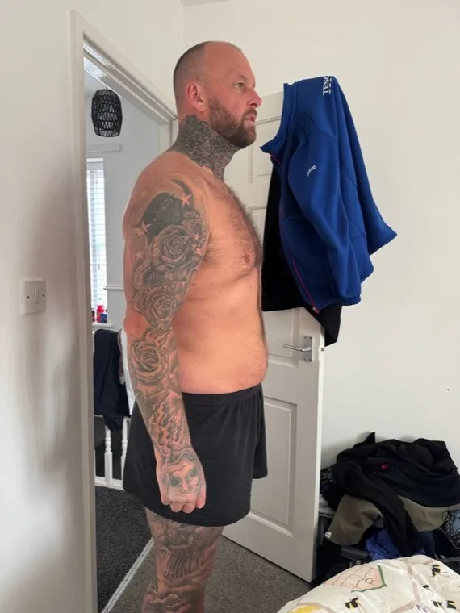
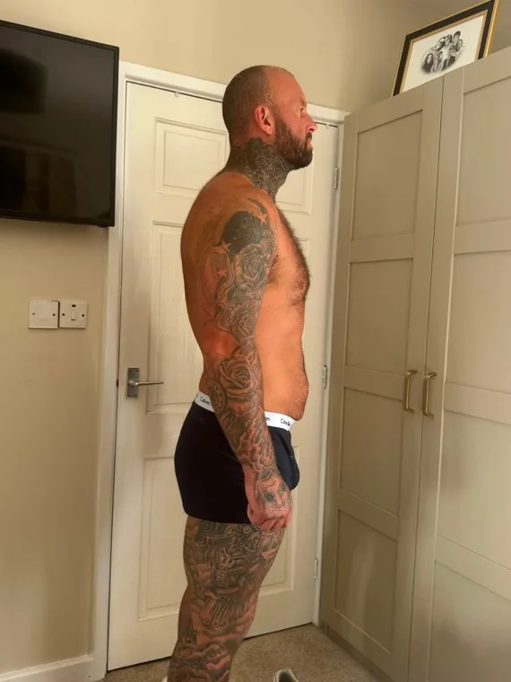
Client case study
44 · dad · tiler · ex-strongman · Foundation phase · 9 weeks
He could barely eat 2,500 kcal on a maintenance of roughly 3,900. Job one wasn't cutting his food. It was getting him to eat more. Five sessions a week, every set logged, 10,000 steps, seven days out of seven.
I used to judge progress purely by the scales. Callum taught me to track all the data. My strength is improving and I feel much better overall. Sustainable habits, not quick fixes.
In their words
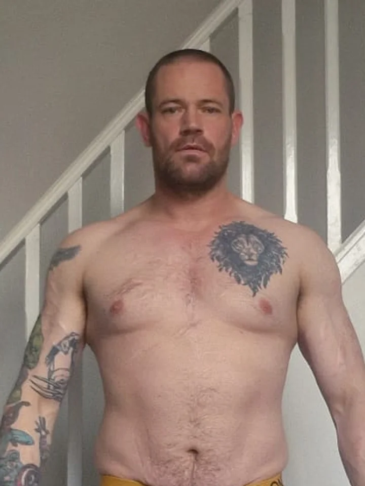
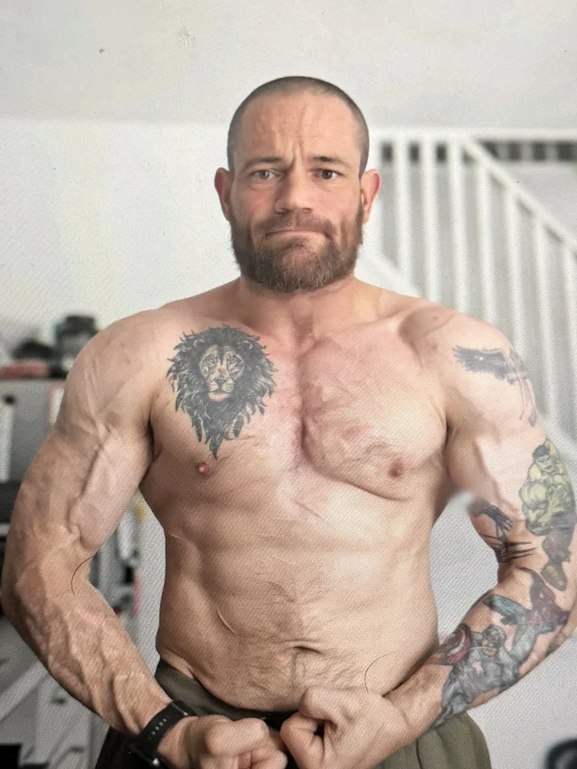
He tweaked my training, then completely flipped it on its head, and I've seen results. He's shown me the value of nutrition too: what to eat, how to eat clean and still feel full, and the cravings have stopped.
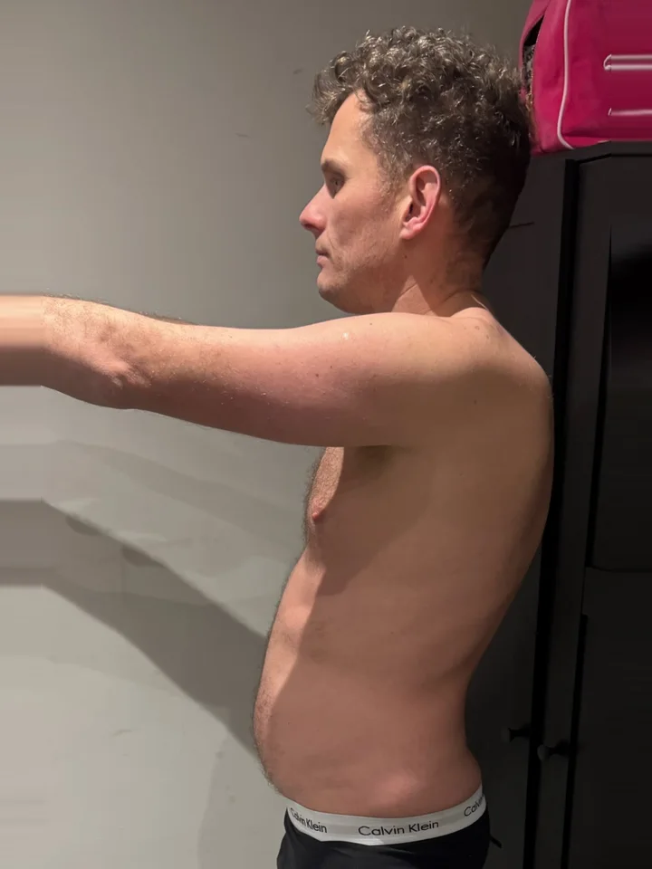
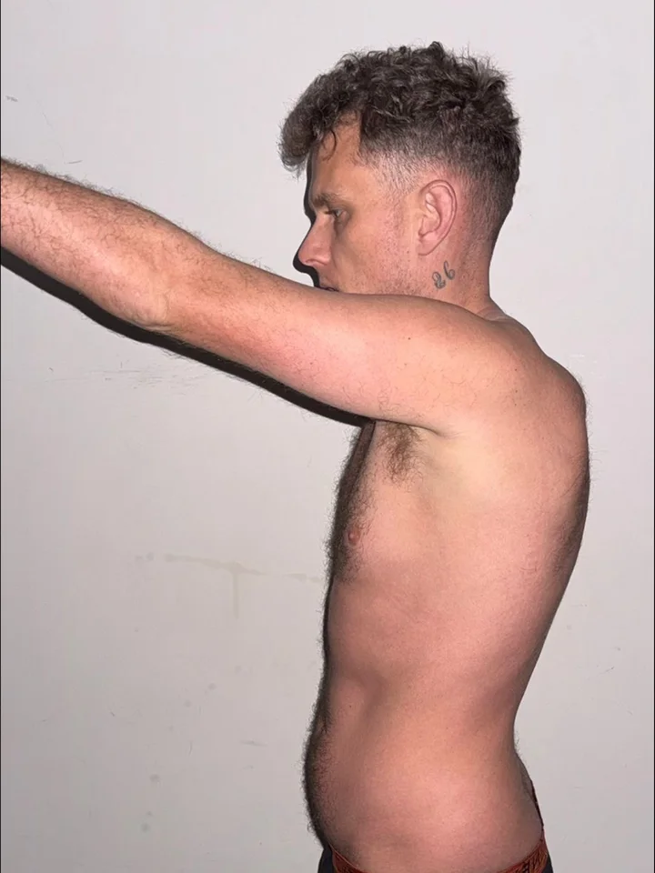
I'd been trying for over 10 years to no avail. Callum got me on the right track straight away. His attention to detail is the biggest draw. I'm feeling and looking the best I ever have.
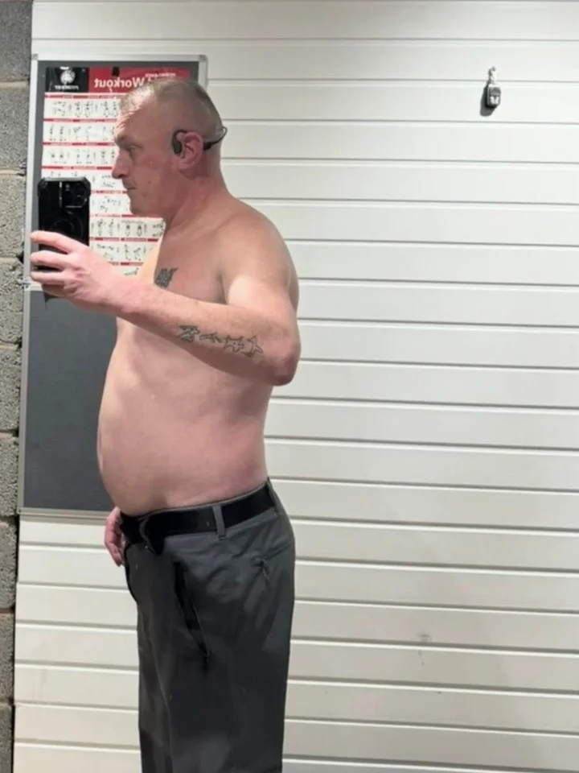
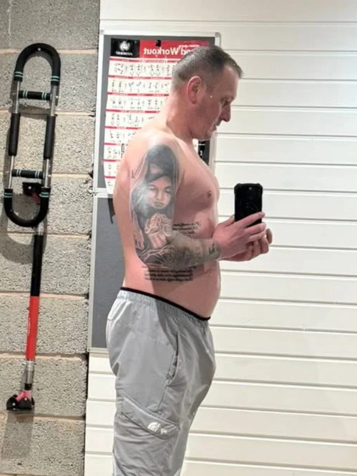
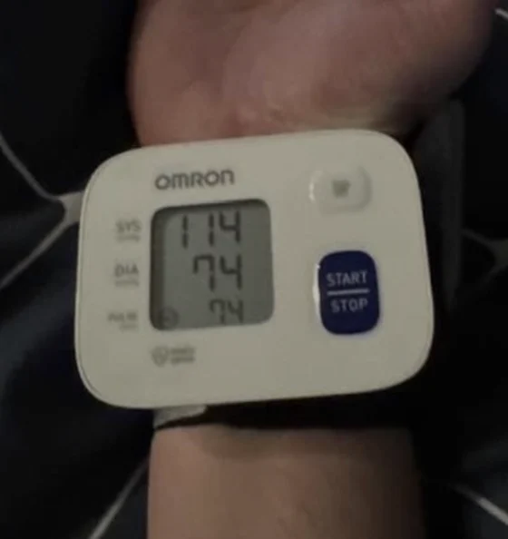
Dale's own readings, from his own post. Not medical advice.
I'd been on blood pressure tablets for 12 years, maxed on the dosage. After just two weeks with Callum I genuinely feel like a new man. No more takeaways, no more excuses, and finally living a good life again.
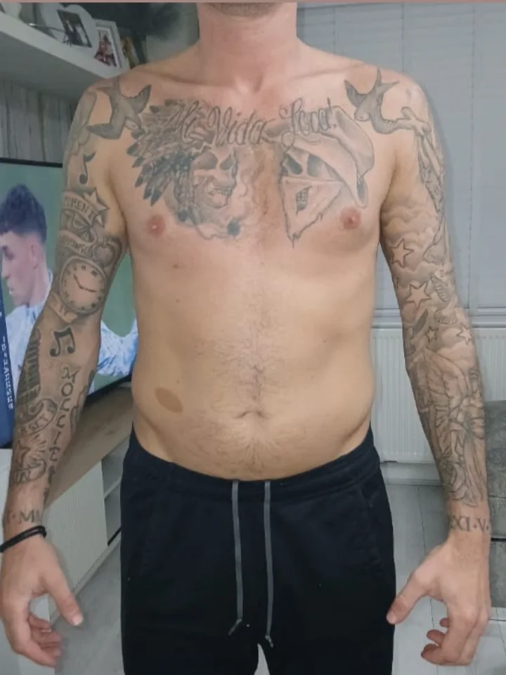
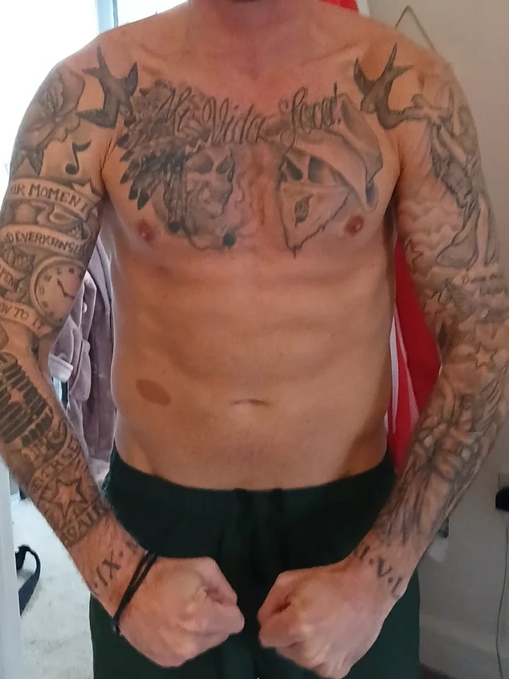
The experience has been spot on. Can't fault him, always there to answer any questions and keep me on track. He created a tailored programme, helped me understand my calorie and macro targets, and gave straightforward nutrition advice that was easy to follow. His knowledge goes far beyond just handing out a training plan. He looks at the whole picture: metabolic health, hormones. Made up with the progress I've made within 8 weeks.
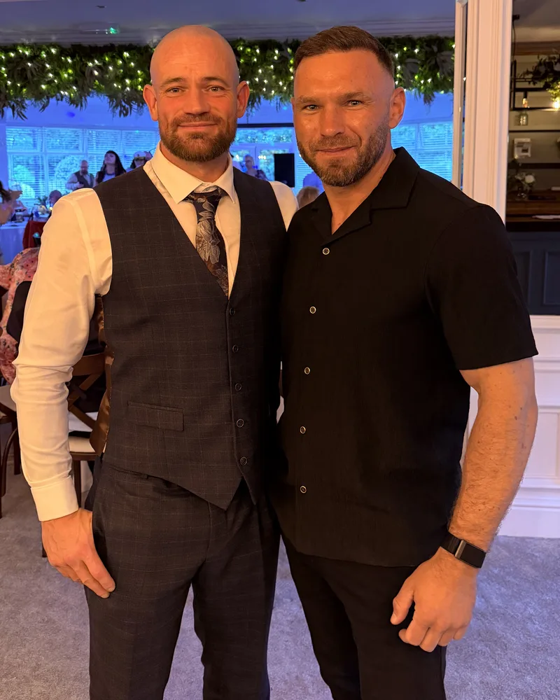
Beyond the check-ins
One-to-one means exactly that. Every week, every check-in, every message, it's me. Over months of that, you're not just a client number. Some of them end up inviting you to their wedding.
Investment & commitment
The longer the structure, the better the weekly value, and the deeper the transformation. 1:1 coaching, application only.
Self-led. The full app and the Framework, 7 days free.
Guided. 90 days, macros built for you, a monthly call and written review.
Not ready for 1:1? Every pound you spend credits toward the level above.
Nothing leaves the room
An NDA is signed before we speak properly. Not after you've committed, before. No before-and-afters unless you ask me for them. The one exception: if I ever believed your life was at risk, I'd act on it, and I'd tell you I was doing it.
The same system underpins all three. The difference is duration and depth of oversight. Foundation installs and proves the system. The 6 and 12 month builds carry you through full phase progression with ongoing audits.
Yes. Every package has a monthly plan, or you can pay in full. You get a secure payment link once you're accepted, with the terms confirmed in writing first.
I review your application, we confirm it's the right fit (a quick call if it helps), then you choose a plan and we calibrate your baseline.
Not at all. The system scales from a 3-day full-body foundation upward. Beginners often progress fastest because the structure removes the guesswork from day one.
Because the fit has to be right for both of us. If I don't think I'm the right coach for you, I'll tell you straight, rather than take your money.
No. You don't need to quit drinking, but you do need to track it honestly, so we can see how the data stacks up. Then we plan around it, the same way we plan weekend food.
The baseline is three gym sessions a week and 10,000 steps a day, plus logging what you eat. Everything is built around your week, not the other way round.
A bad week is just data. We read it, adjust one thing, and keep moving. On a six-week shred one bad week ends it. On a structured plan, it doesn't.
Yes. Coaching is TRT-aware and your bloods are read with you. Decisions about medication stay between you and your prescriber. My job is the structure and the monitoring around it.
Structure over motivation
You don't need to be ready. You need someone checking the numbers with you every week. Tell me where you're at, and I'll tell you honestly if I can help.
Application only · NDA as standard · the door doesn't close